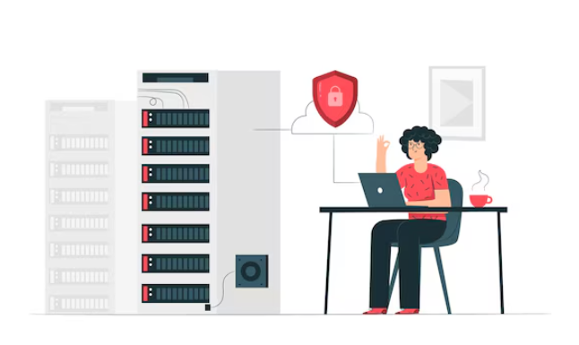
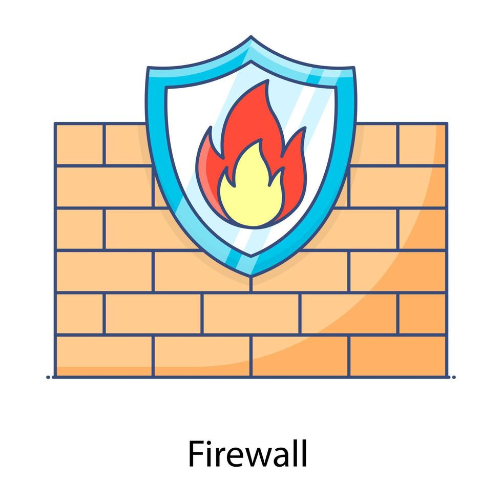
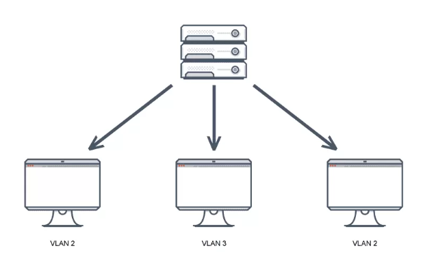
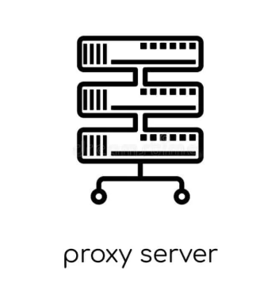
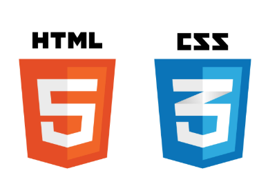
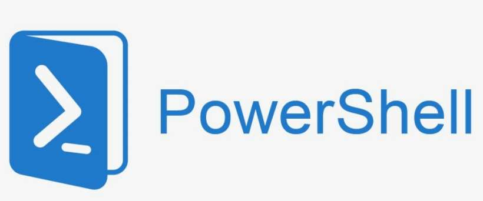
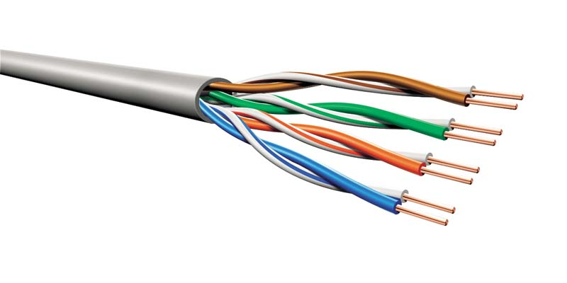
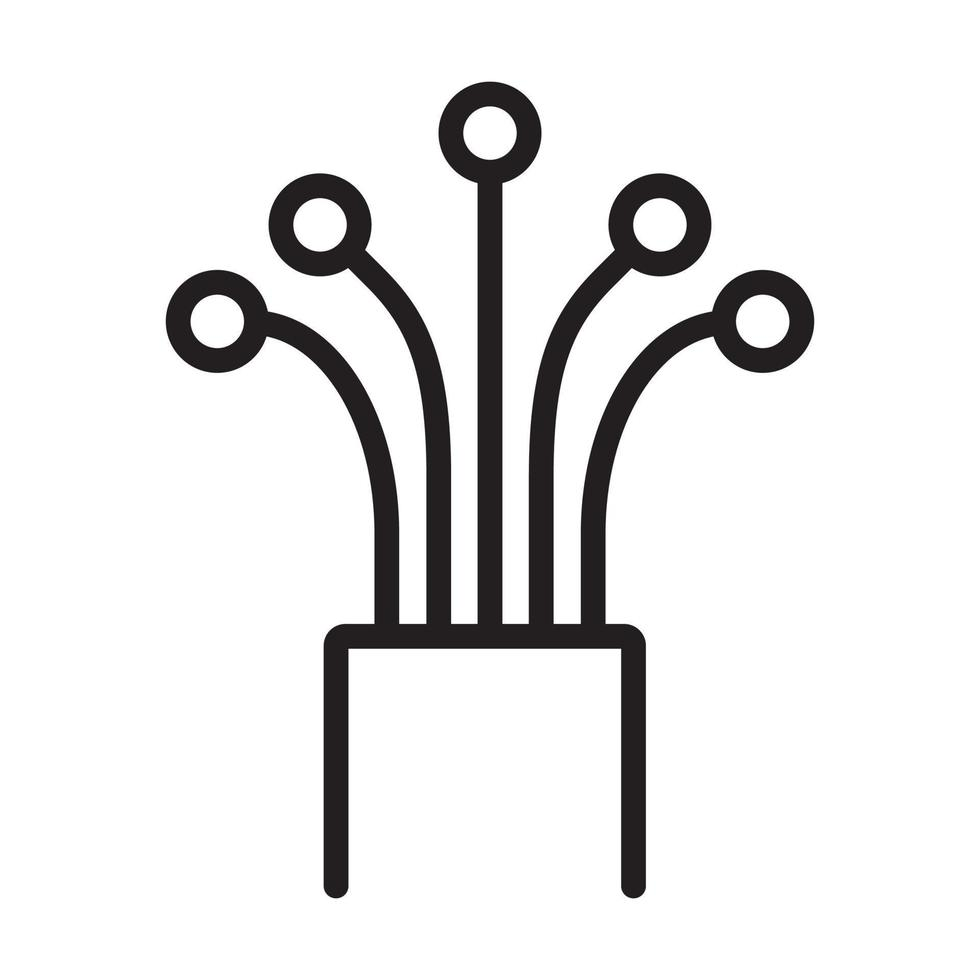
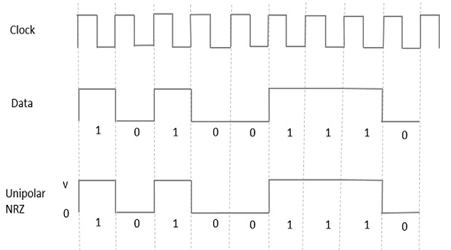

Bienvenue 👋
Vous êtes dans l'onglet compétences ! Choisissez une matière dans la liste pour voir les compétences qui vont avec.
⬅️ Retour à l'accueil
Cliquez sur une matière pour découvrir les compétences que j'ai acquises dans ce domaine :
Cliquez sur le bouton ⬆️ pour revenir en haut de la page.
Mettre en place des services réseau fiables et sécurisés pour garantir l’intégrité des échanges.
Authentification forte (TLS, Kerberos, SASL)
Gestion des utilisateurs avec LDAP
Supervision des équipements via SNMPv3
Déployer des solutions pour renforcer la sécurité face aux principales attaques réseau.
Défense contre SYN Flood, DNS Spoofing, ARP Spoofing
Sécurisation des accès avec Port Knocking & SPA
Analyse des attaques MITM
Évaluer la sécurité des systèmes en simulant des scénarios d’attaque.
Scan et analyse avec Nmap, WinPEAS, LinPEAS
Exploitation avec Metasploit, Burp Suite
Rapport d’audit
Configurer des pare-feux pour contrôler le trafic et protéger les infrastructures.
Règles de filtrage, routage, NAT
Authentification, VPN IPSEC
Tests de sécurité
Cliquez sur le bouton ⬆️ pour revenir en haut de la page.
L'adressage réseau sert à donner une adresse unique à chaque appareil, pour qu'ils puissent communiquer entre eux sur le réseau.
Création d'un plan d'adressage avec Cisco.

Le routage permet aux données de circuler entre différents réseaux en choisissant le meilleur chemin.
Routage OSPF : choix automatique du chemin le plus rapide.
Routage BGP : connexion de différents réseaux indépendants via des systèmes autonomes.
Un VLAN (Virtual LAN) permet de diviser un réseau en plusieurs réseaux logiques pour mieux organiser et sécuriser les communications.
Configuration de VLAN pour segmenter le réseau et mise en place de trunks pour les relier.
Un Trunk est un lien physique configuré pour transporter plusieurs VLANs simultanément.
Windows Server est un système d’exploitation utilisé pour gérer les réseaux d'entreprise, les utilisateurs et les ressources.
Installation, configuration et administration de serveurs sous Windows Server.
Mise en main d'Azure AD pour la mise en place de plusieurs méthodes d'authentifications
Mise en place d’Active Directory pour la gestion des utilisateurs et ordinateurs.
Configuration des rôles réseau tels que DNS, DHCP, GPO.
Gestion de la sécurité des accès.

Créer plusieurs machines ou services sur un même ordinateur avec la virtualisation et conteneurisation. Le cloud permet d'accéder à des ressources distantes.
Déploiement de VM avec HyperV, VMware, QEMU.
Conteneurisation avec Docker.
TP : déploiement complet d’infrastructure (RDS, Ansible...)
Configurer un reverse proxy pour optimiser la répartition du trafic et sécuriser les accès aux services.
Mise en place de HAProxy pour équilibrage de charge.
Implémentation du reverse proxy avec SSL offloading.
Surveillance des serveurs et sécurité.
Cliquez sur le bouton ⬆️ pour revenir en haut de la page.
Développement de sites dynamiques avec PHP et gestion des bases de données MySQL.

Programmation orientée objet avec Java.
Création de scripts d'automatisation et traitement de données avec Python.
Conception d’interfaces web responsives avec HTML et CSS.
Utilisé notamment pour la création de ce portfolio.
Développement back-end avec Node.js, un environnement d'exécution JavaScript côté serveur.

Automatisation de tâches système et gestion réseau sous Windows avec PowerShell.
Cliquez sur le bouton ⬆️ pour revenir en haut de la page.
Assurer la transmission de signaux sur des câbles cuivre (paires torsadées, coaxiaux).
Analyse de l’impédance, pertes, réflexion.
TP : mesures sur différents câbles.
Utilisation des ondes électromagnétiques pour les communications sans fil.
Étude des antennes, rayonnement, atténuation.
TP : caractérisation des antennes.
Utilisation des fibres optiques pour un transport rapide et sécurisé des données.
Étude du guidage de la lumière, pertes.
TP : test de connecteurs optiques.
Traduction des données en signaux adaptés à la transmission.
Techniques : NRZ, Manchester.
TP : analyse des signaux codés.
Utilisation de MATLAB pour générer et analyser des signaux via le module SDR Adalm Pluto.
Transmission/réception en temps réel.
Analyse du spectre et modulation (QPSK, OFDM...)
Cliquez sur le bouton ⬆️ pour revenir en haut de la page.
Permettre aux téléphones IP de communiquer via un serveur dédié.
Configuration des comptes SIP et des lignes.
Mise en place des plans de numérotation.
TP : déploiement et test d’une infrastructure téléphonique locale.
Assurer la communication mobile.
Étude de l'architecture 4G (eNB, EPC, UE).
Configuration des eNodeB, EPC, UE en TP.
Observation du handover (changement de cellule).
Analyse du roaming et de la mobilité.